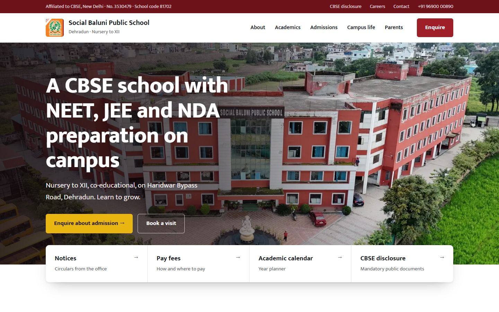
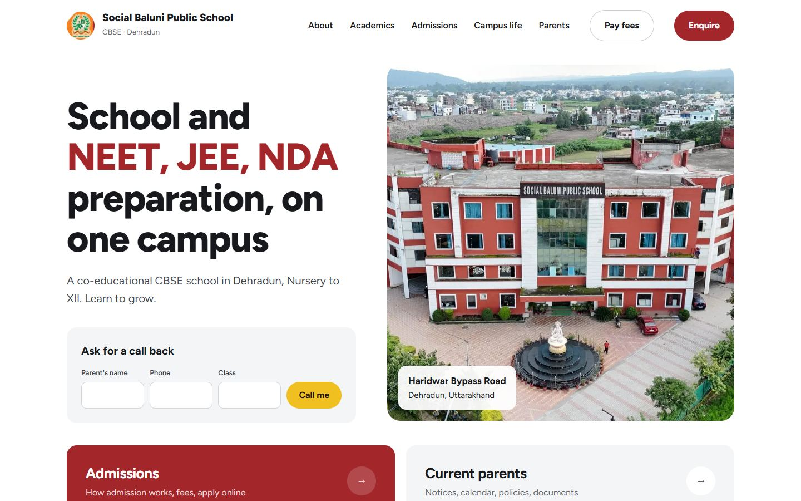
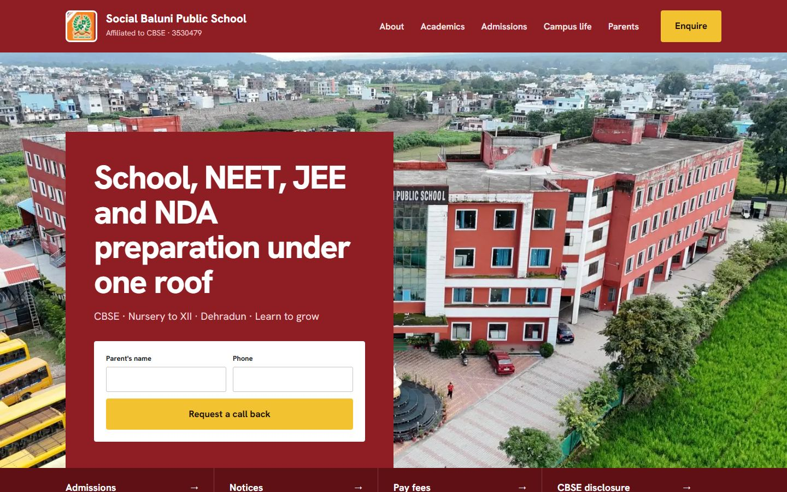

Social Baluni Public School
Social Baluni Public SchoolHomepage design options
Three directions for the new school website homepage. Each one uses the school's own photos, video and wording. Open one to see the full page.

A · Campus first
Full-width video hero, quick links for current parents, green sports section.
View option A →
B · Open split
Light and spacious, call-back form up front, video in a rounded frame.
View option B →
C · Crimson house
Bold school crimson, headline panel over the video, large sports numbers.
View option C →These are design mockups of the homepage only. Links, menus and forms are not connected yet. Best viewed on a laptop or desktop screen.